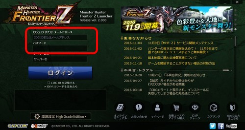
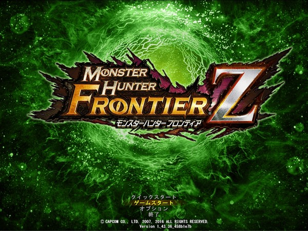

ログイン、ゲームのはじめかた
インストール後、ログインすることで『モンスターハンター フロンティアＺ』をプレイできます。
ログインの手順
（１）デスクトップ上にある「モンスターハンター フロンティアＺ」のアイコンをダブルクリックします。
マルチコアプロセッサーを搭載したパソコンでは、1台のパソコンでゲームプログラムを2つ起動してプレイすることができます。
ゲームの多重起動
（２）nProtect GameGuardが自動的に設定されます。
※nProtect GameGuardとは、ゲームを安全に遊んでいただくためのセキュリティソフトのことです。nProtect GameGuardはパソコンのタスクバーに常駐され、規約違反に該当する不正行為があるかをチェックしています。不正行為が発見された場合には、ゲームが強制的に終了されます。

（３）ご使用のパソコンによっては、パソコンランチャーの起動前に「ユーザー アカウント制御」の画面が表示されます。ここでは、「許可」をクリックします。

（４）ランチャー画面が起動します。
上記の図の赤枠内にCOG IDとパスワードを入力し、［ログイン］ボタンをクリックするとログインが行なわれ、アップデートが開始されます。

（５）ゲームスタートを押すとゲームにログインします。

（６）ゲームのタイトル画面が表示されます。［Enter］キーを押す、または画面をクリックすると、メニューが出現します。